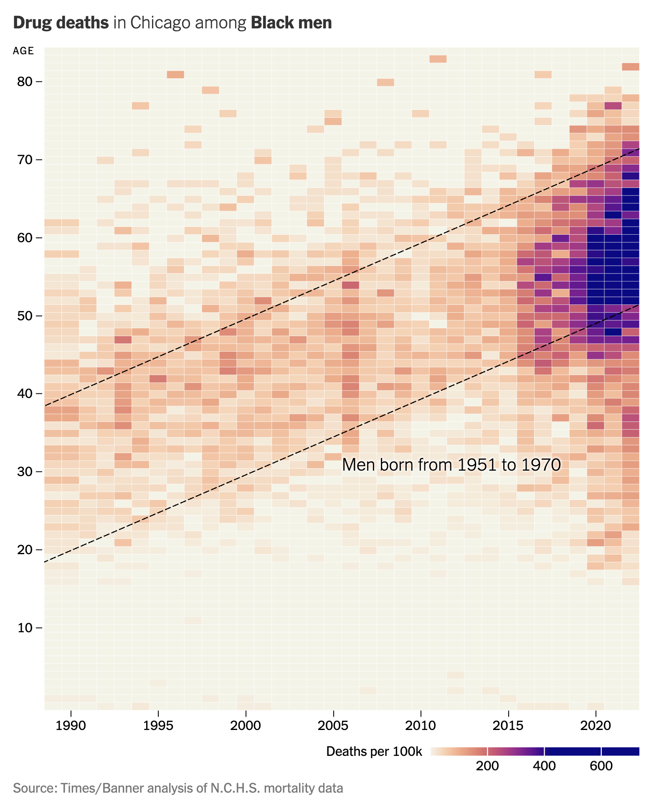

How to extract data from a heatmap with R using the tidyverse (CC348)
Pat uses R to show how to extract the underlying data from a heatmap published in the New York Times describing the increase in deaths among Black men in Chicago due to drug overdoses. To pull this off he uses the ggplot2, dplyr, scales, and png packages. The functions he uses from these packages include as.character, as.numeric, as_tibble, col2rgb, cut, filter, function, group_by, library, map, matrix, mean, mutate, names, ncol, nrow, pal_gradient_n, pivot_longer, readPNG, rgb, select, slice_min, sqrt, str_detect, str_replace, summarize, t, table, tibble, unnest, which.max, and write_tsv. You can find the original New York Times article here. If you have a figure that you would like to see me discuss in a future newsletter and episode of Code Club, email me at pat@riffomonas.org!
Original image
Right click to save to your computer. Alternatively, the code below has been modified to read directly from this website with the help of RCurl::getURLContent().

Code
library(tidyverse)
library(png)
library(RCurl) # added to read PNG from website
get_mode_string <- function(x){
table(x) %>% which.max() %>% names()
}
get_closest_hex <- function(query){
query_rgb <- col2rgb(query) %>% t() %>% as_tibble()
hex_code_lookup %>%
mutate(distance = sqrt((query_rgb$red - red)^2 +
(query_rgb$green - green)^2 +
(query_rgb$blue - blue)^2)) %>%
slice_min(distance, with_ties = FALSE)
}
# modified to read PNG from website
rgb_data <- readPNG(getURLContent("https://riffomonas.org/code_club/assets/images/chicago_drug_deaths.png"))
heat_data <- rgb(rgb_data[,,1], rgb_data[,,2], rgb_data[,,3]) %>%
matrix(nrow = nrow(rgb_data), ncol = ncol(rgb_data)) %>%
as_tibble() %>%
mutate(row = nrow(rgb_data) - row_number() + 1, .before = V1) %>%
pivot_longer(-row, names_to = "column", values_to = "colors") %>%
mutate(column = str_replace(column, "V", "") %>% as.numeric()) %>%
filter(row > 240 & row < 1831 &
column > 106 & column < 1532) %>%
filter(!str_detect(colors, "#([0-9A-Fa-f]).\\1.\\1.")) %>%
mutate(year = cut(column, 2022 - 1989 + 1, labels = 1989:2022),
age = cut(row, 84 - 0 + 1, labels = 0:84)) %>%
summarize(colors = get_mode_string(colors), .by = c(year, age)) %>%
mutate(age = as.character(age) %>% as.numeric,
year = as.character(year) %>% as.numeric)
# n. p. hex
# 0 0 "#F4F3E8"
# 50 34 "#FBCFB0"
# 100 68 "#F7AC88"
# 150 102 "#EB8772"
# 200 136 "#B6525B"
# 250 170 "#C34280"
# 300 204 "#9A248E"
# 350 236 "#6E1193"
# 400 272 "#29088C"
# 450 306 "#0D0887"
# 500 340 "#0D0887"
# 600 408 "#0C0887"
# 735 500 "#0D0987"
hex_code_lookup <- tibble(n = 0:735) %>%
mutate(hex_code = scales::pal_gradient_n(
colours = c("#F4F3E8", "#FBCFB0", "#F7AC88", "#EB8772", "#B6525B",
"#C34280", "#9A248E", "#6E1193", "#29088C", "#0D0887",
"#0D0887", "#0C0887", "#0D0987"),
values = c(0, 50, 100, 150, 200,
250, 300, 350, 400, 450,
500, 600, 735))(n)) %>%
group_by(hex_code) %>%
summarize(n = mean(n)) %>%
mutate(rgb = map(hex_code, ~col2rgb(.x) %>% t() %>% as_tibble())) %>%
unnest(rgb)
heat_data %>%
mutate(closest = map(colors, get_closest_hex)) %>%
unnest(closest) %>%
select(year, age, n) %>%
write_tsv("chicago_drug_deaths.tsv")